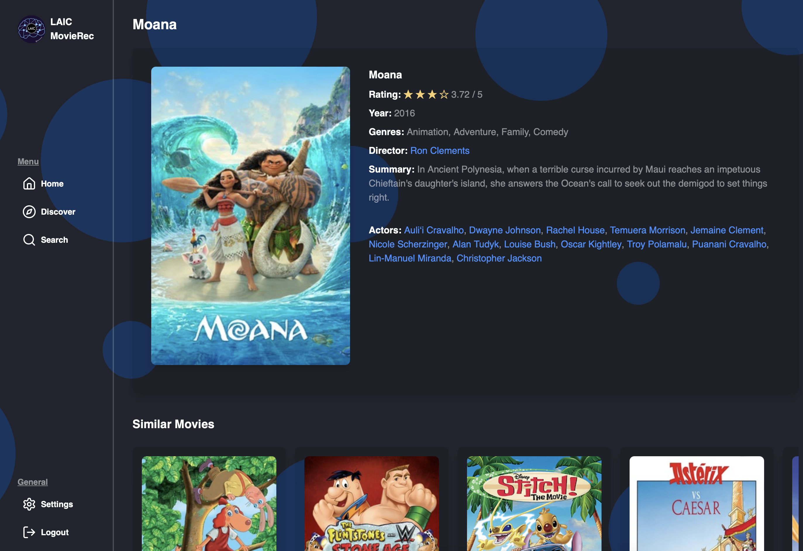

As a part of the Loyola AI Club's Fall 2024 project, we worked to create a movie recommendation website.
I was the VP of Frontend Development. That meant implementing hosting services, connecting a backend model to a UI, and creating a user-friendly interface.
You can check out the official website here: https://movierec-f24-e040c420e2f6.herokuapp.com
Any source code without environment variables is here: https://github.com/loyolaAI/MovieRec-F24


Some things I'm proud of:
- Connecting webscraped data to a machine learning model
- Clickable movie icons that loads its own ML model
- That it works